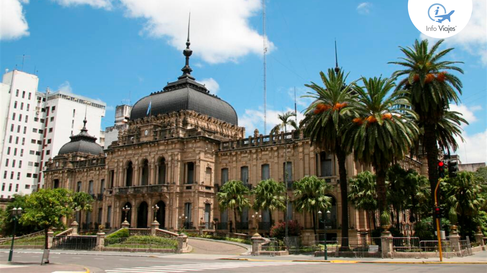

El principio de una historia Feliz
Había una vez un hombre llamado Juan, oriundo de San Miguel de Tucumán, una ciudad encantadora en Argentina. Un día, Juan decidió aventurarse y viajar a París, la ciudad del amor y las luces. Estaba lleno de emoción al explorar un lugar tan lejano y diferente de su hogar. Sin embargo, la vida tenía otros planes para él.

Durante su estancia en París, una serie de eventos infortunados llevaron a Juan a quedarse varado en la ciudad. Se encontró sin dinero, sin familiares y amigos cercanos, en un país extranjero donde no hablaba el idioma. A pesar de su difícil situación, Juan nunca perdió la esperanza ni su sonrisa cálida. La noticia del hombre varado de San Miguel de Tucumán pronto llegó a oídos de los habitantes de París. La gente se conmovió por la historia de Juan y su valentía para enfrentar la adversidad en una tierra extranjera. La comunidad parisina se unió para ayudar a Juan. Establecieron campañas de recaudación de fondos, organizaron eventos benéficos y difundieron su historia en las redes sociales para sensibilizar a otros sobre su situación.
La noticia del hombre varado de San Miguel de Tucumán pronto llegó a oídos de los habitantes de París. La gente se conmovió por la historia de Juan y su valentía para enfrentar la adversidad en una tierra extranjera. La comunidad parisina se unió para ayudar a Juan. Establecieron campañas de recaudación de fondos, organizaron eventos benéficos y difundieron su historia en las redes sociales para sensibilizar a otros sobre su situación.

Con el dinero recolectado, Juan pudo comprar un boleto de avión de regreso a Argentina. La despedida fue emotiva. La gente que lo había conocido durante su tiempo en París se reunió en el aeropuerto para desearle un viaje seguro y expresarle cuánto lo iban a extrañar. Juan estaba abrumado por la gratitud y el amor que había recibido en esa ciudad lejana.
Desde entonces, Juan se convirtió en un embajador de la amabilidad, viajando por su país y el mundo para contar su historia y difundir el mensaje de esperanza y unidad que experimentó en París.